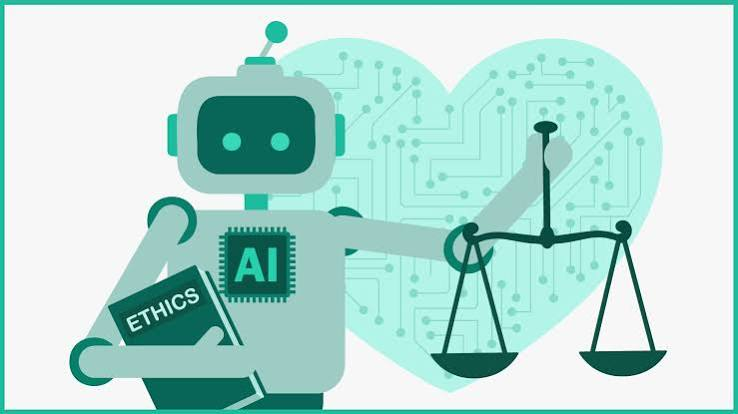

⚖️
Equidad
Un modelo entrenado con datos poco diversos puede tratar peor a ciertos grupos.
Un modelo entrenado con datos poco diversos puede tratar peor a ciertos grupos.
Conviene no compartir datos personales o sensibles con herramientas que no se conocen.
Las respuestas de la IA pueden contener errores; hay que contrastarlas con fuentes confiables.
Es honesto indicar cuándo se usó IA en un trabajo o proyecto.
